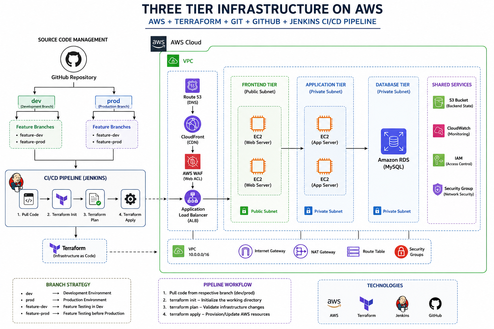
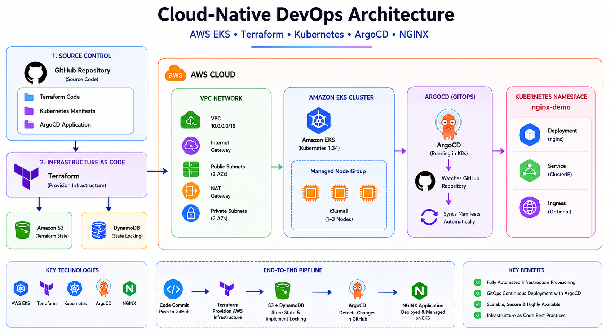
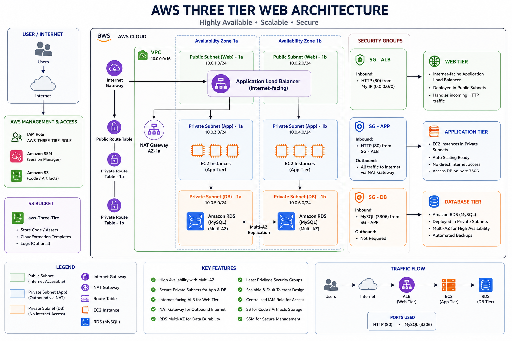

👨💻 Hi, I'm Dipak Kine
$ whoami
Dipak Kine
$ role
DevOps Engineer
$ skills
AWS Kubernetes Docker Terraform CI/CD
$ status
Open to DevOps Opportunities 🚀

$ whoami
Dipak Kine
$ role
DevOps Engineer
$ skills
AWS Kubernetes Docker Terraform CI/CD
$ status
Open to DevOps Opportunities 🚀
DevOps Engineer with 3+ years of experience in CI/CD pipeline automation, cloud infrastructure management, container orchestration, and AWS cloud services. Skilled in Kubernetes, Terraform, Docker, GitHub Actions, Jenkins, Linux, Prometheus, and Grafana.
Automated AWS infrastructure provisioning using Terraform and Jenkins. Jenkins pulls code from GitHub, validates Terraform configuration, generates execution plans, applies infrastructure changes, and stores Terraform state remotely using an S3 backend.

Built a complete GitOps-based Kubernetes deployment workflow using AWS EKS, ArgoCD, Docker, GitHub Actions, and Amazon ECR. Automated application delivery and Kubernetes synchronization using declarative deployment practices.

Cloud-native Kubernetes deployment with CI/CD, monitoring, security scanning, and AWS integration.
Designed and deployed a scalable and highly available AWS three-tier architecture using EC2, ALB, RDS, Auto Scaling Groups, and VPC networking.


Built a production-style cloud-native DevOps platform using Terraform, Amazon EKS, Docker, GitHub Actions, Amazon ECR, ArgoCD, Kubernetes, Trivy, ConfigMaps, Secrets, Persistent Volumes, and Horizontal Pod Autoscaling.
Implemented Infrastructure as Code, CI/CD automation, container security scanning, GitOps deployment, and Kubernetes orchestration for a CodeIgniter-based E-Commerce application running on AWS.
Built scalable AWS infrastructure using EC2, RDS, ALB and Auto Scaling Groups.
Automated AWS infrastructure provisioning and CI/CD deployment workflows.
Implemented GitOps deployment using Kubernetes, ArgoCD and GitHub Actions.
Integrated Trivy, SonarQube, Prometheus and Grafana into CI/CD workflows.

Want to preview my complete DevOps resume?
Email me for collaboration or opportunities: